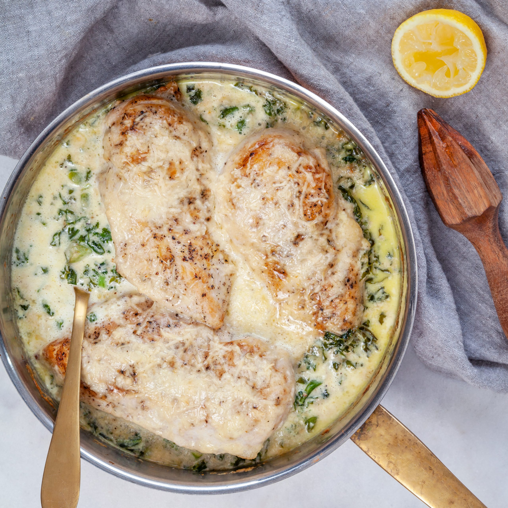

Parmesantupp

Description
This is an absolute amazing chicken meal. The saltiness of the parmesan with the spinach is a marvelous combo.
Serve it with rice and dont be cheap on the gravy. You should soak the rice with gravy!
Ingredients
- 4 chicken fillet
- 3 dl heavy cream
- 150 g parmesan
- 200 g spinach
- 0,5 dl olive oil
- 0,5 dl soy
- 1 lemon
Steps
- Marinate the chicken in the soy and olive oil. Squeeze the lemon juice in to the marinade.
- Fry the chicken in a really hot pan until it gets some nice color.
- Put the chicken in an oven form
- Pour the cream over the chicken. Sprinkel parmesan and spinach over the chicken
- Put in oven at 200 degrees celsius for about 40 minutes
- Boil the rice and voila. Dig in!